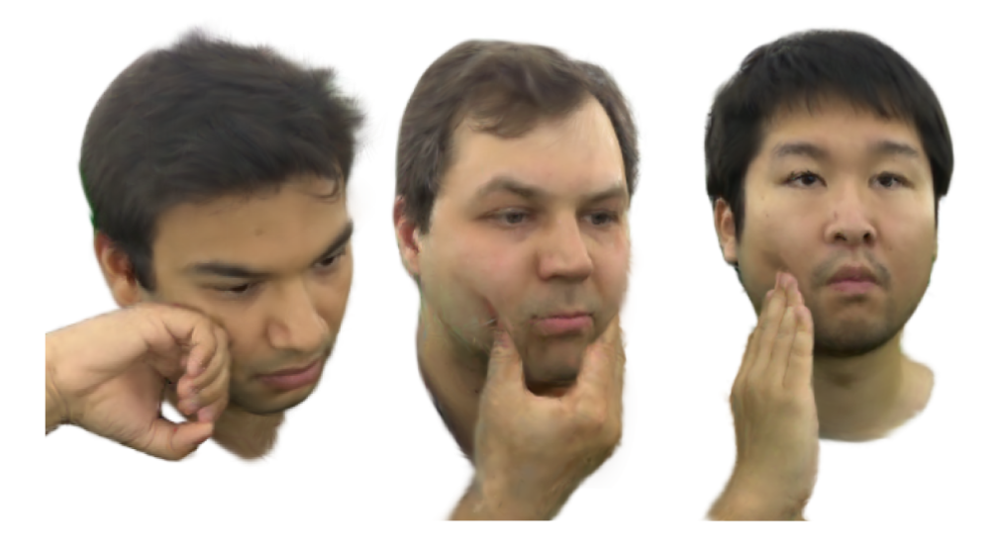
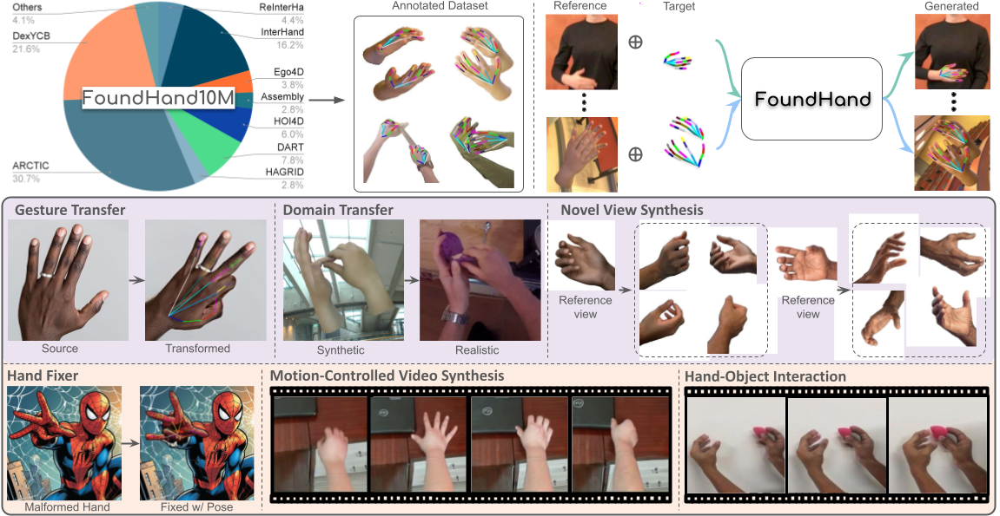
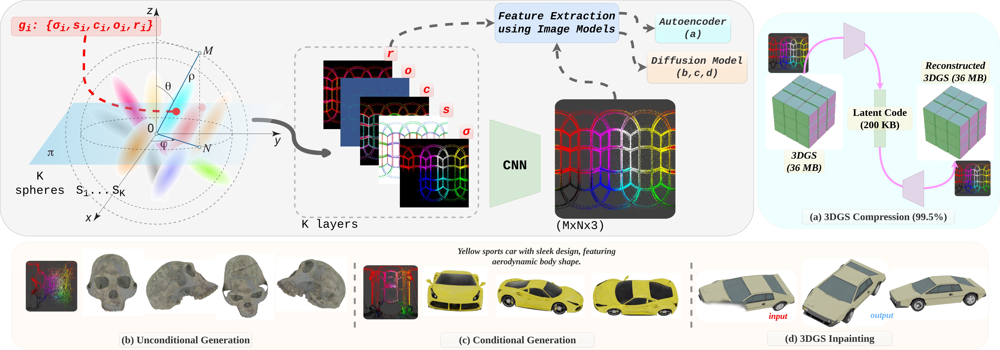
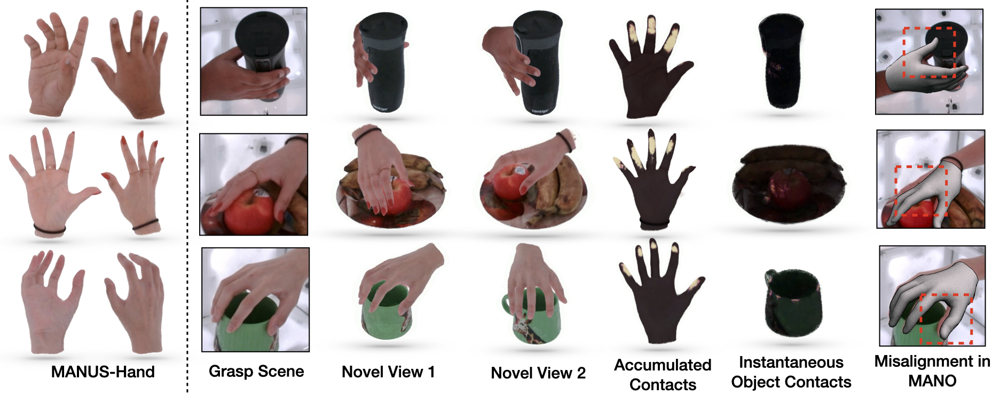
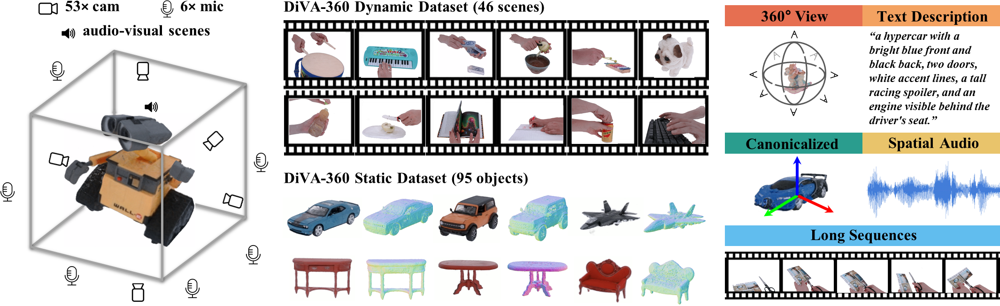
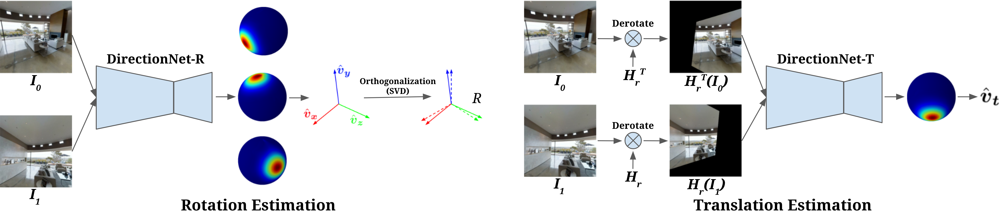
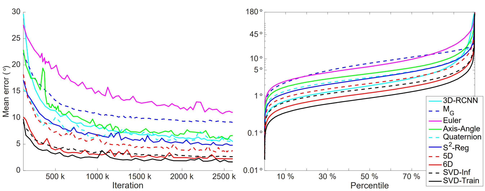
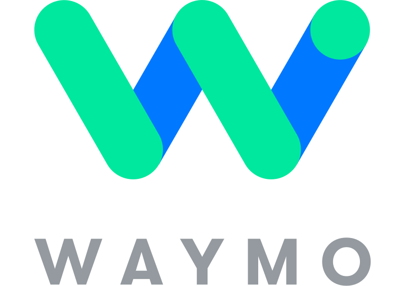

|
Kefan (Arthur) Chen
kefan_chen@brown.edu
I'm a 3rd year Ph.D. candidate at Brown University, advised by Prof. Srinath Sridhar.
My research focuses on developing intelligent agents that understand and learn dexterous skills from humans, with the goal of enabling robotic assistance for everyday tasks.
My expertise encompasses 3D vision, Generative AI, Language Vision Models (LVMs), digital humans, neural rendering, and Large Multimodal Models (LMMs).
Previously, I obtained my bachelor’s degree in ECE from the University of Toronto in 2018. Then, I worked as a research scientist and ML engineer at Google Research, Pinterest, and autonomous driving startups from 2018 to 2022. I had the honor to work with Dr. Ameesh Makadia and
Prof. Noah Snavely at Google Research, and Prof. Raquel Urtasun
and Prof. Sanja Fidler at UofT.
Along my academic journey, I also interned at NVIDIA, Meta, and Waymo.
|

|
|

|
InteractAvatar: Modeling Hand-Face Interaction in Photorealistic Avatars with Deformable Gaussians
Kefan Chen, Sreyas Mohan*, Justin Theiss*, Sergiu Oprea*, Srinath Sridhar, Aayush Prakash
International Conference on Computer Vision (ICCV), 2025.
[Paper]
[Website]
|
|

|
FoundHand: Large-Scale Domain-Specific Learning for Controllable Hand Image Generation
Kefan Chen*, Chaerin Min*, Linguang Zhang, Shreyas Hampali, Cem Keskin, Srinath Sridhar
Conference on Computer Vision and Pattern Recognition (CVPR), 2025. (Highlight, 2.98% acceptance rate.)
[Paper]
[Website]
|
|

|
UVGS: Reimagining Unstructured 3D Gaussian Splatting using UV Mapping
Aashish Rai, Dilin Wang, Mihir Jain, Nikolaos Sarafianos, Kefan Chen, Srinath Sridhar, Aayush Prakash
Conference on Computer Vision and Pattern Recognition (CVPR), 2025.
[Paper]
[Video]
[Website]
|
|

|
MANUS: Markerless Hand-Object Grasp Capture using Articulated 3D Gaussians
Chandradeep Pokhariya, Ishaan Shah, Angela Xing, Zekun Li, Kefan Chen, Avinash Sharma, Srinath Sridhar
Conference on Computer Vision and Pattern Recognition (CVPR), 2024.
[Paper]
[Website]
[Code]
[Dataset]
|
|

|
DiVa-360: The Dynamic Visual Dataset for Immersive Neural Fields
Cheng-You Lu, Peisen Zhou, Angela Xing, Chandradeep Pokhariya, Arnab Dey, Ishaan Shah, Rugved Mavidipalli, Dylan Hu, Andrew Comport, Kefan Chen, Srinath Sridhar
Conference on Computer Vision and Pattern Recognition (CVPR), 2024. (Highlight, 2.81% acceptance rate.)
[Paper]
[Video]
[Website]
[Code]
[Dataset]
|
|

|
Wide-Baseline Relative Camera Pose Estimation with Directional Learning
Kefan Chen, Noah, Snavely, Ameesh Makadia
Conference on Computer Vision and Pattern Recognition (CVPR), 2021.
[Paper]
[Bibtex]
[Video]
[Website]
[Code]
@InProceedings{Chen_2021_CVPR,
author = {Chen, Kefan and Snavely, Noah and Makadia, Ameesh},
title = {Wide-Baseline Relative Camera Pose Estimation With Directional Learning},
booktitle = {Proceedings of the IEEE/CVF Conference on Computer Vision and Pattern Recognition (CVPR)},
month = {June},
year = {2021},
pages = {3258-3268}
}
|
|

|
An Analysis of SVD for Deep Rotation Estimation
Jake Levinson, Carlos Esteves, Kefan Chen, Noah Snavely, Angjoo Kanazawa, Afshin Rostamizadeh, Ameesh Makadia
Conference on Neural Information Processing Systems (NeurIPS), 2020.
[Paper]
[Bibtex]
[Video]
[Code]
@inproceedings{levinson20neurips,
title = {An Analysis of {SVD} for Deep Rotation Estimation},
author = {Jake Levinson, Carlos Esteves, Kefan Chen, Noah Snavely, Angjoo Kanazawa, Afshin Rostamizadeh, and Ameesh Makadia},
booktitle = {Advances in Neural Information Processing Systems 34},
year = {2020}
}
|
 |
Brown University
Ph.D. student in Computer Science
Research Areas: 3D Vision, GenAI, Digital Human, LVM, Embodied AI, VR/XR.
2022 - 2027
|
 |
University of Toronto
B.Eng. in Electrical Engineering
2014 - 2018
|
|  |
Waymo
Research Intern
Mountainview, CA
June, 2025 - Current
Research perception on L4 autonomous driving.
|
|
Meta
Research Scientist Intern
Burlingame, CA
June, 2024 - Mar, 2025
Research large image and video diffusion model for dexterous hand generation.
Seattle, WA
June, 2023 - Dec, 2023
Research interactive 3D human avatars using Gaussian Splatting for realistic digital human and VR/XR.
|
 |
Pinterest
Machine Learning Engineer
Toronto, Canada
January, 2022 - September, 2022
ML for shopping content mining.
|
|
Gatik
Toronto, Canada
September, 2020 - December, 2021
Develop long-range multimodal perception for self-driving trucks.
|
|
Google Research
AI Resident
New York City, NY
June, 2018 - August, 2020
Deep learning and 3D computer vision research.
|
 |
Nvidia
Research Intern
Toronto, Canada
May, 2017 - August, 2017
Deep learning research in animation and robotic perception.
|
|